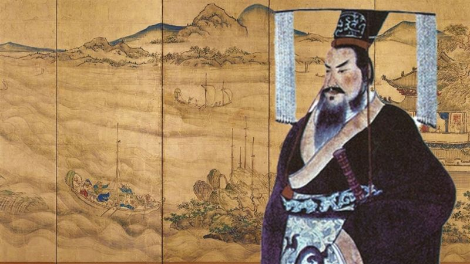
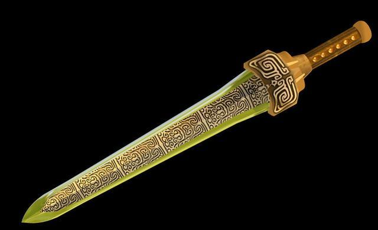
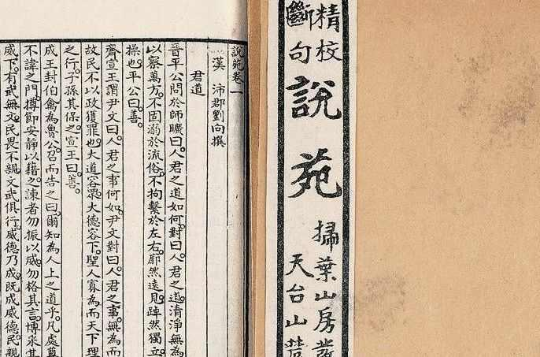

秦始皇的身高《史记·刺客列传》记载，燕国使者荆轲试图刺杀秦始皇时，秦始皇因为不能及时拔出佩剑，狼狈地绕柱逃跑。一般认为秦始皇佩戴的是青铜剑，而青铜剑通常较短，最著名的青铜剑——越王勾践剑全长仅55.6厘米。1974年，考古学家发现了一把接近1米长的青铜长剑，这一发现推翻了青铜剑长度受限的传统观念。可以推测，秦始皇佩戴的可能是这种加长版的青铜剑，因此在刺杀事件中拔剑困难是可以理解的。此外，研究发现，战国时期帝王和官员习惯将佩剑背在身后，实验表明身高在1.90米以上的人才能拔出1米长的青铜剑，因此秦始皇可能因身高低于此标准而无法迅速拔剑。 |
 |
秦始皇的佩剑据《复活的军团：秦军秘史》一书所述，秦始皇在亲政后可能让人制作了两柄青铜剑，并在剑上刻有“定秦”二字。一柄随身携带，另一柄埋在观台下。秦始皇死后，随身佩剑可能与他一同入葬。 |
 |
秦始皇讨论禅让西汉刘向的《说苑·至公》记载，秦始皇曾与博士们讨论“禅让”的问题。在六国被灭之后，秦始皇询问群臣是否应采纳五帝的禅让制还是三王的世袭制。博士鲍白令之认为五帝的禅让制是将天下视为公天下，而三王的世袭制则是将天下视为家天下。鲍白令之指出秦始皇推行的工程过多，滥用民力，与五帝的德行相差甚远，使得秦始皇最终打消了禅让的念头。虽然战国时期已有燕王哙“禅让”王位给子之的先例，而秦始皇自认为“功过三皇，德兼五帝”，有“禅让”的念头也不足为奇。然而，《史记》未记载此事，因此“秦始皇谈禅让”只能作为轶事参考。 |
 |
徐福东渡为了寻找长生不老之药，秦始皇派遣方士徐福带领6000名童男女渡海寻仙。《楚义六帖》记载，徐福及其随行人员到达瀛洲（今日本）后便失踪。有人认为日本秦氏为其后代，但这一说法尚存争议。 |